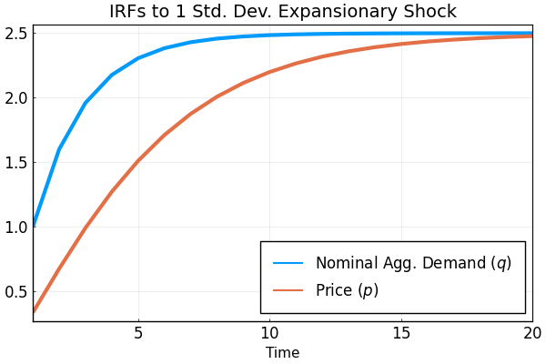
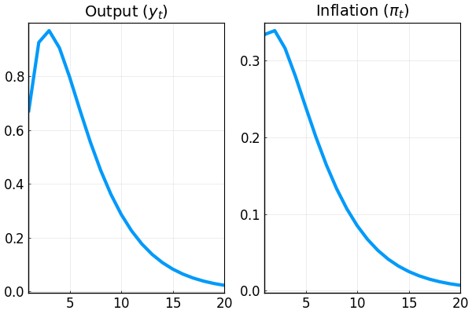
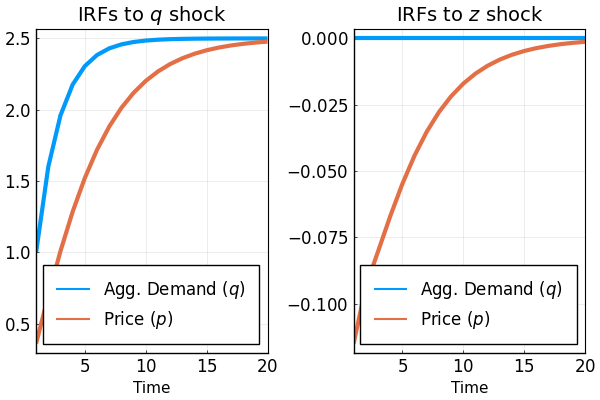
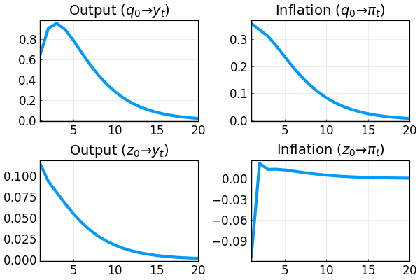

Pricing under RI w/o Endogenous Feedback
This document goes through a couple of examples for solving pricing under rational inattention without endogenous feedback using the DRIPs package.
 to run and modify the following code (no software is needed on the local machine).
to run and modify the following code (no software is needed on the local machine).
See Afrouzi and Yang (2019) for background on the theory.
Contents
Ex. 1A: One Shock Case
There is a measure of firms indexed by $i\in[0,1]$. Firm $i$ chooses its price $p_{i,t}$ at time $t$ to track its ideal price $p_{i,t}^*$. Formally, her flow profit is $-(p_{i,t}-p_{i,t}^*)^2$
We start by assuming that $p_{i,t}^*=q_t$ where
Here $q_t$ can be interpreted as money growth or the nominal aggregate demand. Therefore, the state-space representation of the problem is
Initialization
Include the package:
using DRIPs;
nothing #hideAssign value to deep parameters and define the structure of the problem
ρ = 0.6; #persistence of money growth
σ_u = 1; #std. deviation of shocks to money growth
nothing #hidePrimitives of the DRIP:
ω = 100;
β = 0.96^0.25;
A = [1 ρ; 0 ρ];
Q = σ_u*[1; 1];
H = [1; 0];
nothing #hideSolution
ex1 = solve_drip(ω,β,A,Q,H);
nothing #hideMeasure Performance
using BenchmarkTools;
@benchmark solve_drip(ω,β,A,Q,H) setup = (ω = 100*rand()) # solves and times the function for a random set of ω'sBenchmarkTools.Trial:
memory estimate: 66.66 KiB
allocs estimate: 533
--------------
minimum time: 41.664 μs (0.00% GC)
median time: 129.069 μs (0.00% GC)
mean time: 156.600 μs (17.54% GC)
maximum time: 12.371 ms (97.95% GC)
--------------
samples: 10000
evals/sample: 1IRFs
ex1irfs = dripirfs(ex1, T = 20);
nothing #hideLet's plot how the average price $p=\int_0^1 p_{i,t}di$ responds to a shock to money growth:
using Plots, LaTeXStrings; pyplot();
plot(1:ex1irfs.T,[ex1irfs.x[1,1,:],ex1irfs.a[1,1,:]],
xlabel = "Time",
label = [L"Nominal Agg. Demand ($q$)" L"Price ($p$)"],
title = "IRFs to 1 Std. Dev. Expansionary Shock",
xlim = (1,ex1irfs.T),
lw = 3,
legend = :bottomright,
legendfont = font(12),
tickfont = font(12),
framestyle = :box)
We can also plot the IRFs of inflation $\pi_t\equiv p_t-p_{t-1}$ and output $y_t\equiv q_t-p_t$ to 1 percent expansionary shock to $q$:
p1 = plot(1:ex1irfs.T,ex1irfs.x[1,1,:]-ex1irfs.a[1,1,:],
title = L"Output ($y_t$)")
p2 = plot(1:ex1irfs.T,[ex1irfs.a[1,1,1];ex1irfs.a[1,1,2:end]-ex1irfs.a[1,1,1:end-1]],
title = L"Inflation ($\pi_t$)")
plot(p1,p2,
layout = (1,2),
xlim = (1,ex1irfs.T),
lw = 3,
legend = false,
tickfont = font(12),
framestyle = :box)
Ex. 1B: Two Shocks Case
Suppose now that $p_{i,t}^*=q_t-z_{t}$ where
Here $q_t$ can be interpreted as money growth and $z_{i,t}$ as an idiosyncratic TFP shock. Therefore,
Initialization
Assign values:
ρ = 0.6; #persistence of money growth
σ_u = 1; #std. deviation of shocks to money growth
σ_z = √10; #std. deviation of idiosyncratic shock
nothing #hideSpecifying the primitives of the drip
ω = 100;
β = 0.96^0.25;
A = [1 ρ 0; 0 ρ 0; 0 0 0];
Q = [σ_u 0; σ_u 0; 0 σ_z];
H = [1; 0; -1];
nothing #hideSolution
ex2 = solve_drip(ω,β,A,Q,H);
nothing #hideMeasure Performance
@benchmark solve_drip(ω,β,A,Q,H) setup = (ω = 100*rand()) # solves and times the function for a random set of ω'sBenchmarkTools.Trial:
memory estimate: 123.44 KiB
allocs estimate: 782
--------------
minimum time: 113.388 μs (0.00% GC)
median time: 258.636 μs (0.00% GC)
mean time: 271.715 μs (7.47% GC)
maximum time: 4.104 ms (92.19% GC)
--------------
samples: 10000
evals/sample: 1IRFs
ex2irfs = dripirfs(ex2, T = 20);
nothing #hideTo get the IRFs simply use the law of motion for actions:
p1 = plot(1:ex2irfs.T,[ex2irfs.x[1,1,:],ex2irfs.a[1,1,:]],
title = L"IRFs to $q$ shock");
p2 = plot(1:ex1irfs.T,[ex2irfs.x[1,2,:],ex2irfs.a[1,2,:]],
title = L"IRFs to $z$ shock");
plot(p1,p2, layout = (1,2),
xlabel = "Time",
label = [L"Agg. Demand ($q$)" L"Price ($p$)"],
xlim = (1,ex2irfs.T),
lw = 3,
legend = :bottomright,
legendfont = font(12),
tickfont = font(12),
framestyle = :box)
More IRFs:
p1 = plot(1:ex2irfs.T,ex2irfs.x[1,1,:]-ex2irfs.a[1,1,:],
title = L"Output ($q_0\to y_t$)");
p2 = plot(1:ex2irfs.T,[ex2irfs.a[1,1,1];ex2irfs.a[1,1,2:end]-ex2irfs.a[1,1,1:end-1]],
title = L"Inflation ($q_0\to \pi_t$)")
p3 = plot(1:ex2irfs.T,ex2irfs.x[1,2,:]-ex2irfs.a[1,2,:],
title = L"Output ($z_0\to y_t$)");
p4 = plot(1:ex2irfs.T,[ex2irfs.a[1,2,1];ex2irfs.a[1,2,2:end]-ex2irfs.a[1,2,1:end-1]],
title = L"Inflation ($z_0\to \pi_t$)")
plot(p1,p2,p3,p4, layout = (2,2),
xlim = (1,ex2irfs.T),
lw = 3,
legend = false,
tickfont = font(12),
framestyle = :box)
This page was generated using Literate.jl.